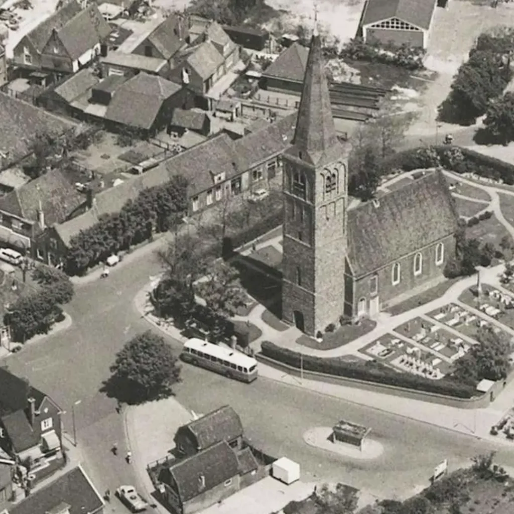
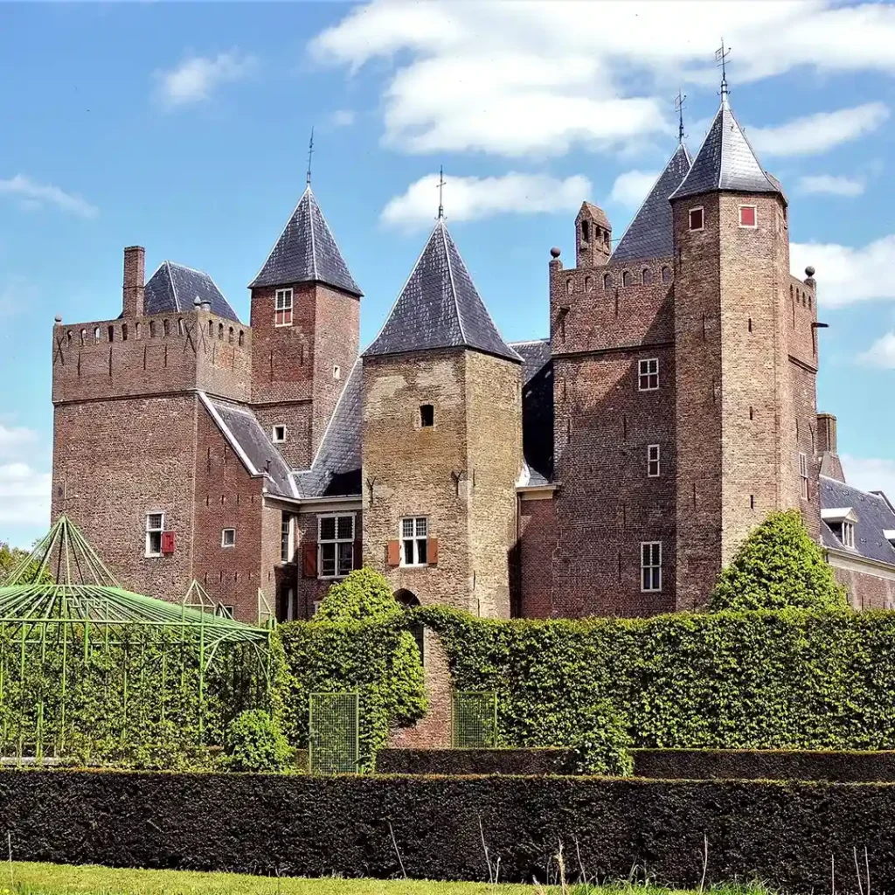
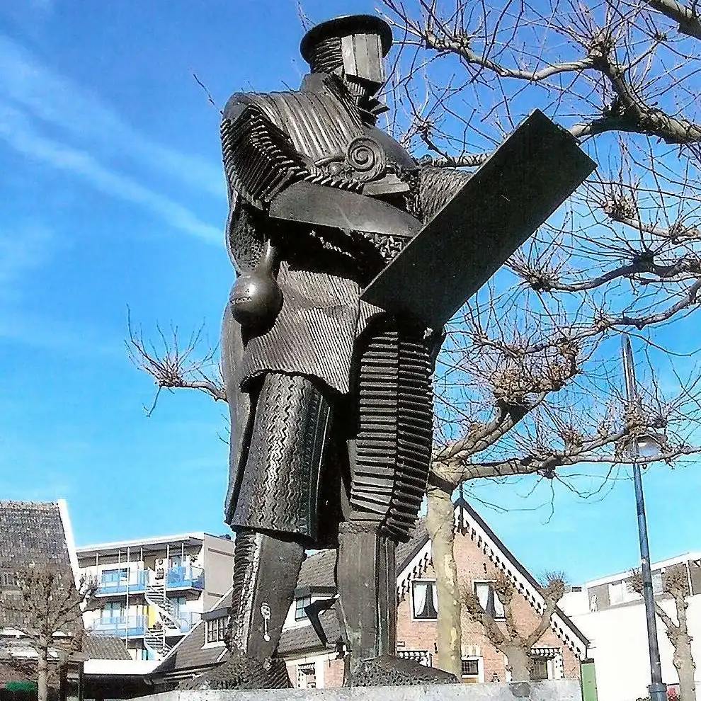
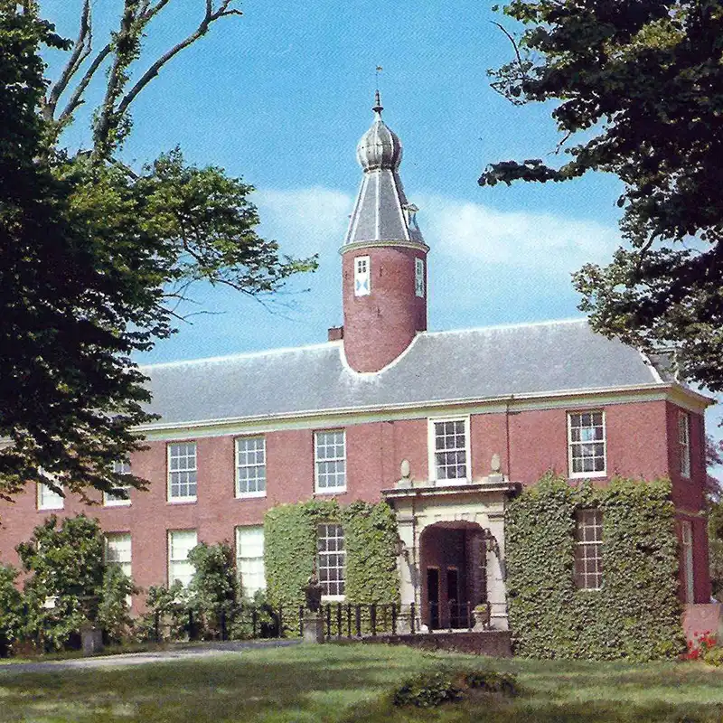

De geschiedenis van Heemskerk, verzameld en verteld sinds 1988
Lezingen, films en wandelingen, een Historisch Huis dat elke maandag open is, en ruim 18.000 foto's, documenten, boeken en bidprentjes om zelf in te zoeken.